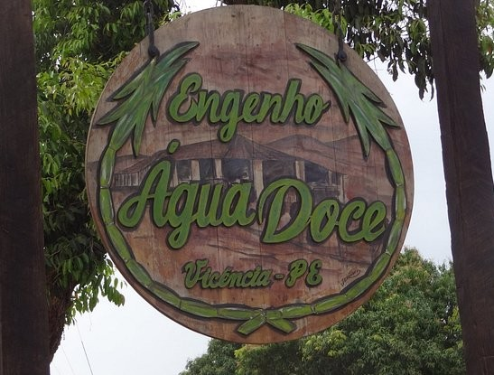

Este projeto é um sistema de informação básico do tipo CRUD. Um dos integrantes do grupo tem uma cachaçaria na família e tivemos a ideia de utilizar os produtos dela para criar um controle de estoque para organizar de forma mais eficiente e segura a reserva de produtos deles.
Por curiosidade, Chama-se Cachaçaria Engenho Água Doce e fica na zona da mata norte do nosso estado, em Vicência-PE.
Fotos e Videos do sistema rodando!